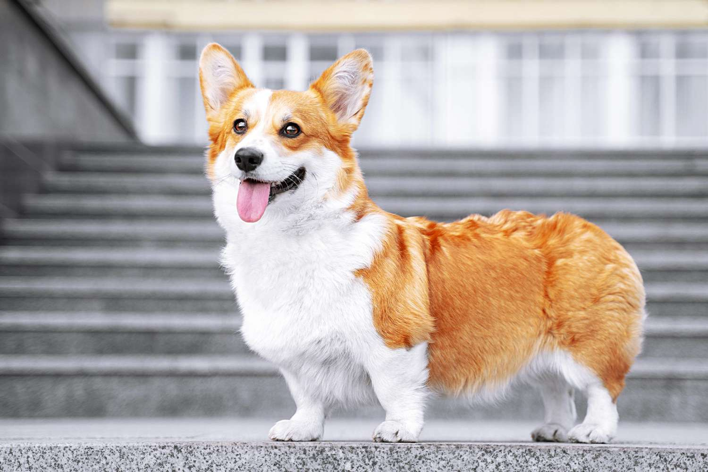
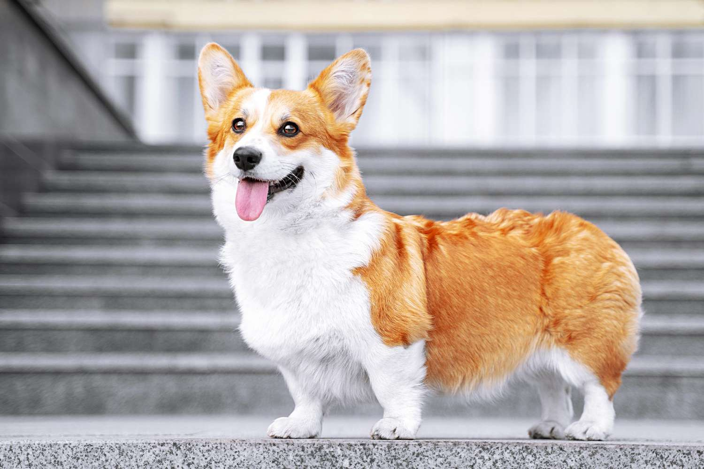
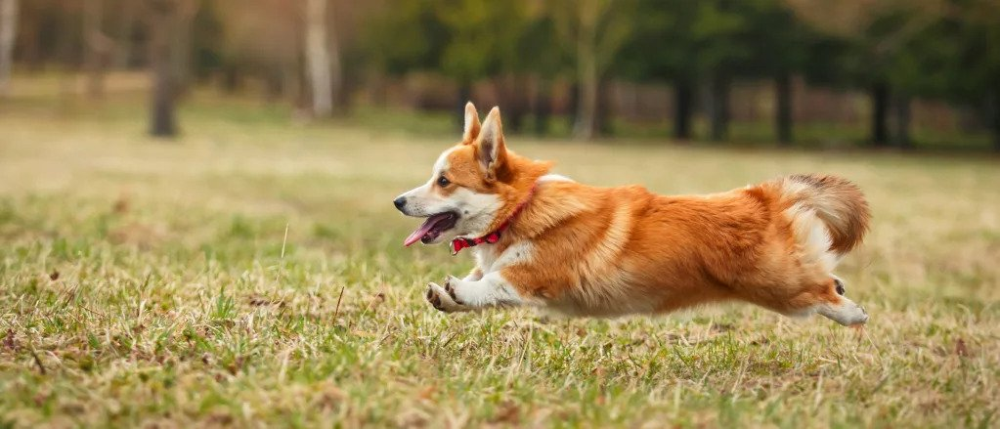
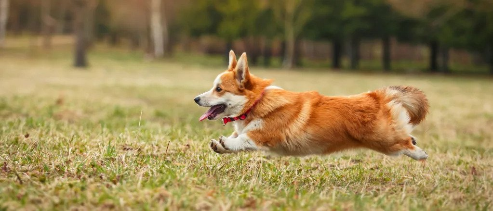

Rocky

Rocky is a 5 year old corgi. He prefers going for a jog than lounging around the house. He’s full of energy and loves to show his affection by snuggling up next to me while watching some Netflix.
One thing I definitely overlooked when we got Rocky was the amount this little guy could shed! I spent an hour vacuuming our carpet floors just the day after he entered our homes! However, I would vacuum up and down the walls of our home for him, my life-long pal and good boy.
Photo Gallery
 

 

Likes
- Peanut Butter
- Bouncy Balls
- Tummy Rubs
Bacon Q Dog

Bacon Q. Dog is a 9yr old labradoodle. He prefers to spend his days lounging among the three different beds/couches that his family has gifted him. He enjoys a walk or two around the neighborhood, as long as he can pretend that he doesn't see any of the other animals to avoid the embarrassment of not wanting to admit he has no wolf-like skills in chasing them.
At night just as the rest of the family is ready to relax, Bacon suddenly wants to release all of his energy. He will place his toys on a mini couch and frantically drag the couch around, giving his toys "a ride." There is also a lot of rolling. Lots and lots of rolling.
Photo Gallery


Likes
- Belly rubs
- Playing tug-of-war
- Sneaking onto the couch
York

York loves to stay active by taking long walks near his house. He also enjoys chewing on his large assortment of toys with his favorite being his squeaky pig. York's favorite food is sausage, but cheese is another favorite.
York is a very sociable dog and is a licensed therapy dog. He frequently visits nursing homes and other places in an attempt to raise peoples' spirits. When it comes to bedtime, York prefers to sleep alone in his favorite blue dog bed. He will always be the first to get up in the morning.
Photo Gallery


Likes
- Food
- Playing
- Toys
Jingle

Jingle loves going outside. He used to be an outdoor/indoor cat until we realized that he loved to get injured. Now, we take him on walks with a leash which he loves! Every time he sees me carrying the leash he goes crazy and meows to go out.
Jingle is very mischievous, he has gotten into many different accidents. His first accident was outside; a bee stung his paw and he cried all night long. The second one was ALSO outside, he got stuck on a tree for four days. Finally, he came back home one day with his tail bleeding and ripped out.
Photo Gallery


Likes
- Going on Walks
- Being Petted
- Eating Treats
Maui

Maui is a two-year-old mini-doodle who thinks he is as big as a German shepherd. This mindset allows him to voice his opinion, especially when demanding food or attention. He is also a classic momma's boy, as he has learned if he is annoying enough, he can get anything he demands.
During his lounging time, he gets to the highest chair he can get on and stares outside, waiting either for guests or belly rubs. He also has the tendency to force his mother to go to sleep as soon as his father goes to bed.
Photo Gallery


Likes
- Sleeping
- Candy
- Eating
Chief

Chief is a 9 year old pomeranian who loves to sleep as much as he can. He naps anywhere, ranging from someone's bed to the grass outside. He enjoys walking outside, but keep watch of him, otherwise he will try to consume geese poop.
He does not like any toys anymore as when he was younger, he watched a bigger toy shred his favorite one to pieces. He used to know how to roll over, but now replaced that memory with a spin as it is much easier.
Photo Gallery


Likes
- Sleeping
- Deli Chicken
- Pets behind the ear